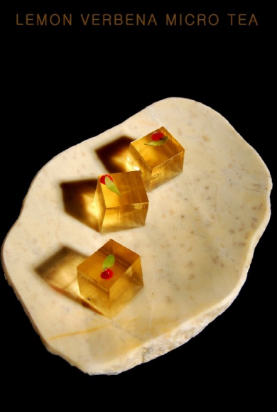

그러던 와중에 분자요리라는것을 알게되었다.

분자요리에 글자 주전부리의 조합은 듣도보도 못한 조합이었으나
왠지 흐흐디자인의 글자주전부리가 봉착한 제조방식의 벽을 부셔버릴 수 있을것 같다는 희망이 들어서 당장 지원을했다.
마침 그 분자요리 클래스를 운영하는 곳은 분자요리 스튜디오 오픈10주년 기념해서 파격할인을 진행중이었고 난 매우 운좋게 그 수업을 들을 수 있었다.
그곳에서 배운 분자요리 기술을 응용해서 이전에 시도하려다 실패하기 일쑤였던 과자나 초콜릿라인을 개발 성공하기에 이르렀다.
앞으로 그곳에서 배운 분자요리 기술로 글자 푸딩, 글자 마시멜로, 글자 사탕등을 개발해 나갈 예정이다.